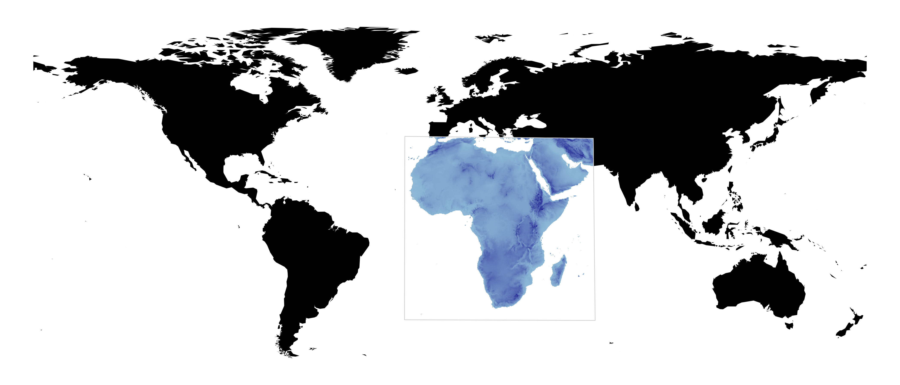
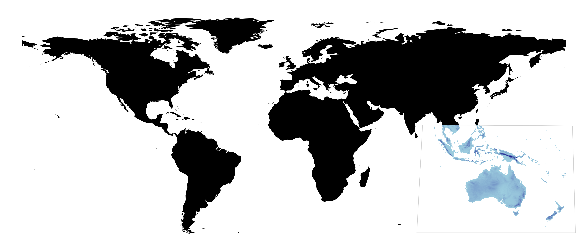
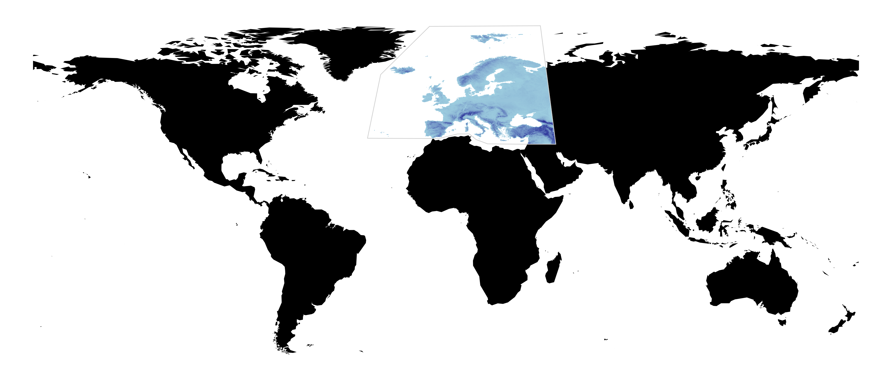
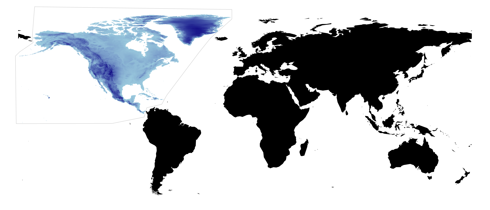
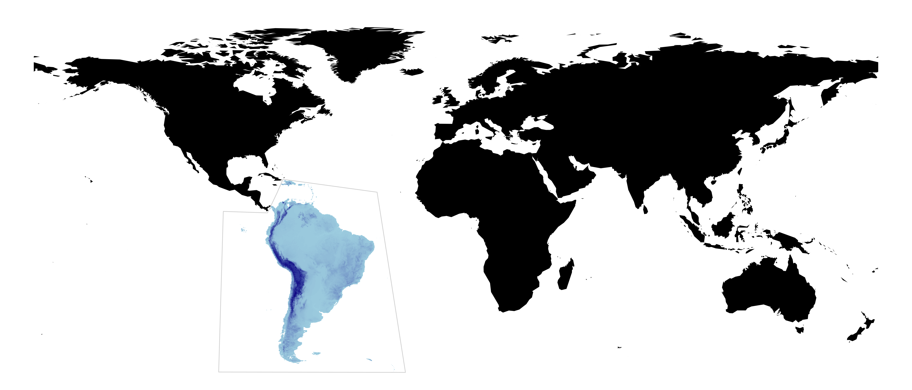
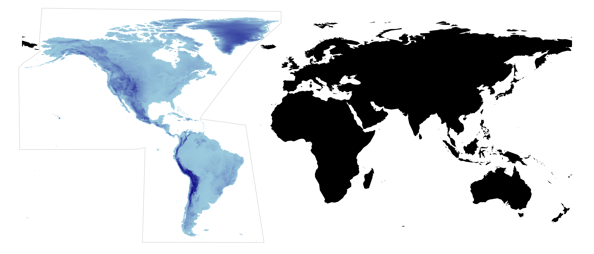
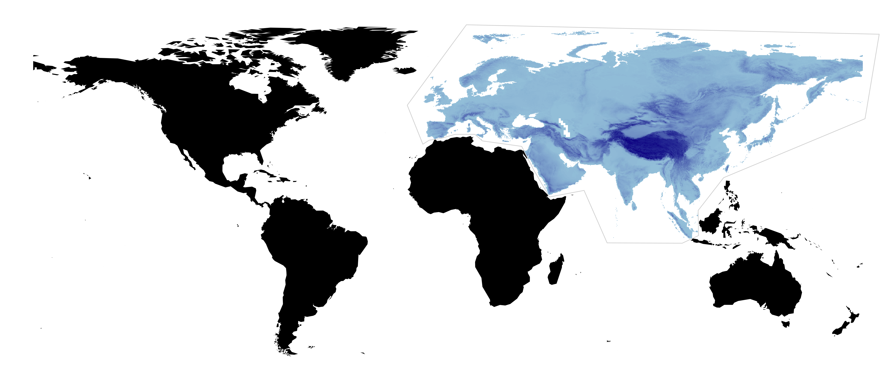
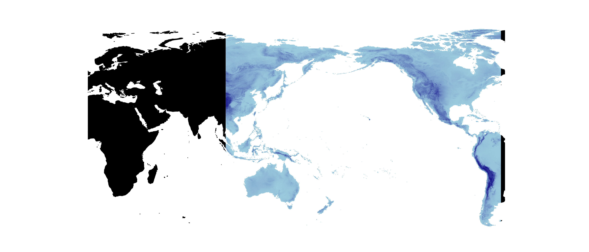

Click here to go straight to the Downloads section!
Motivation
Environmental variables that are thought to be relevant to species' ecology and geographic distribution are essential for applications such as species distribution modeling. However, the number of such variables that are available, that span multiple time periods, and that can easily be integrated with other datasets is very limited.
With the ENVIREM dataset, we provide a number of climatic and topographic variables that have been described in the literature, and make them available at the same resolutions as are available at WorldClim, and for both current and past time periods. Additionally, we provide an R package that makes it possible to generate these variables for other input datasets, such as future climate scenarios. See the R Code section below for additional details.
Citation
An article that describes the generation of the ENVIREM dataset, and that provides case studies that demonstrate its value, is available in the journal Ecography.
Title, P.O., Bemmels, J.B. 2017. ENVIREM: An expanded set of bioclimatic and topographic variables increases flexibility and improves performance of ecological niche modeling. Ecography doi: 10.1111/ecog.02880.
Contact
If you have read through the contents of this website and the associated research article and have questions, please email Pascal Title at ptitle[at]umich.edu.Variables
| variable abbreviation | brief description | units | source |
|---|---|---|---|
| annualPET | annual potential evapotranspiration: a measure of the ability of the atmosphere to remove water through evapotranspiration processes, given unlimited moisture | mm / year | A, B |
| aridityIndexThornthwaite | Thornthwaite aridity index: Index of the degree of water deficit below water need | - | C |
| climaticMoistureIndex | a metric of relative wetness and aridity | - | D, E |
| continentality | average temp. of warmest month - average temp. of coldest month | ℃ | F, G |
| embergerQ | Emberger's pluviothermic quotient: a metric that was designed to differentiate among Mediterranean type climates | - | H |
| growingDegDays0 | sum of mean monthly temperature for months with mean temperature greater than 0℃ multiplied by number of days | - | I |
| growingDegDays5 | sum of mean monthly temperature for months with mean temperature greater than 5℃ multiplied by number of days | - | I |
| maxTempColdestMonth | max. temp. of the coldest month | ℃ * 10 | I |
| minTempWarmestMonth | min. temp. of the coldest month | ℃ * 10 | I |
| monthCountByTemp10 | count of the number of months with mean temp greater than 10℃ | months | I |
| PETColdestQuarter | mean monthly PET of coldest quarter | mm / month | I |
| PETDriestQuarter | mean monthly PET of driest quarter | mm / month | I |
| PETseasonality | monthly variability in potential evapotranspiration | mm / month | I |
| PETWarmestQuarter | mean monthly PET of warmest quarter | mm / month | I |
| PETWettestQuarter | mean monthly PET of wettest quarter | mm / month | I |
| thermInd | compensated thermicity index: sum of mean annual temp., min. temp. of coldest month, max. temp. of the coldest month, x 10, with compensations for better comparability across the globe | ℃ | F, G |
| tri | terrain roughness index | - | J |
| topoWet | SAGA-GIS topographic wetness index | - | K, L |
References
A: Zomer, R.J., Trabucco, A., Bossio, D.A. & Verchot, L.V. (2008). Climate change mitigation: A spatial analysis of global land suitability for clean development mechanism afforestation and reforestation. Agriculture, Ecosystems and Environment, 126, 67–80.A: Zomer, R.J., Trabucco, A., Van Straaten, O. & Bossio, D.A. (2006) Carbon, Land and Water: A Global Analysis of the Hydrologic Dimensions of Climate Change Mitigation through Afforestation/Reforestation. Colombo, Sri Lanka.
B: Hargreaves, G.L. & Hargreaves, G.H. (1985). Irrigation water requirements for Senegal River basin. Journal of Irrigation and Drainage Engineering, 111, 265–275.
C: Thornthwaite, C.W. (1948). An approach toward a rational classification of climate. Geographical Review, 38, 55–94.
D: Willmott, C. & Feddema, J. (1992). A More Rational Climatic Moisture Index. The Professional Geographer, 44, 84–88.
E: Vörösmarty, C.J., Douglas, E.M., Green, P.A. & Revenga, C. (2005). Geospatial Indicators of Emerging Water Stress: An Application to Africa. Ambio, 34, 230–236.
F: Sayre, R., Comer, P., Warner, H. & Cress, J. (2009) A new map of standardized terrestrial ecosystems of the conterminous United States: US Geological Survey Professional Paper 1768. Reston, VA.
G: Rivas-Martínez, S. & Rivas-Sáenz, S. “Synoptical Worldwide Bioclimatic Classification System”. Available online at http://www.globalbioclimatics.org/ [accessed 15 February 2016]
H: Daget, P. (1977). Le bioclimat méditerranéen: analyse des formes climatiques par le système d'Emberger. Vegetatio, 32, 87–103.
I: Metzger, M.J., Bunce, R.G.H., Jongman, R.H.G., Sayre, R., Trabucco, A. & Zomer, R. (2013). A high-resolution bioclimate map of the world: a unifying framework for global biodiversity research and monitoring (M. Sykes, Ed.). Global Ecology and Biogeography, 22, 630–638.
J: Wilson, M.F.J., O’Connell, B., Brown, C., Guinan, J.C. & Grehan, A.J. (2007). Multiscale Terrain Analysis of Multibeam Bathymetry Data for Habitat Mapping on the Continental Slope. Marine Geodesy, 30, 3–35.
K: Boehner, J., Koethe, R. Conrad, O., Gross, J., Ringeler, A. & Selige, T. (2002) Soil regionalization by means of terrain analysis and process parameterization. Soil Classification 2001 European Soil Bureau, Research Report No. 7 (eds Micheli, E., Nachtergaele, F. & Montanarella, L.), pp. 213-222. Luxembourg.
L: Conrad, O., Bechtel, B., Bock, M., Dietrich, H., Fischer, E., Gerlitz, L., Wehberg, J., Wichmann, V. & Böhner, J. (2015) System for automated geoscientific analyses (SAGA) v. 2.1.4. Geoscientific Model Development 8, 1991-2007.
Downloads
The ENVIREM dataset has been archived with the University of Michigan's Deep Blue Data, and all files can be downloaded from that repository. You can download the associated readme file here (although all information can be found on this site). Rasters have been rounded to two decimal places to decrease file size.
File naming scheme:
Files for download have been carefully named to reflect what specific version of the ENVIREM dataset is contained within the zipped directory. The naming follows the pattern:
[region] _ [time period] _ [circulation model] _ [resolution] _ [file format].zip
Each downloadable .zip file contains the 16 climatic variables for the specified combination of geographic/temporal/spatial/file-format requested. The exception is the 30 arc-second datasets, which have been split into 4 files to obtain more manageable file sizes. For these split datasets, specific variables are found in the following sets:
- Set 1
- annualPET
- aridityIndexThornthwaite
- climaticMoistureIndex
- continentality
- PETseasonality
- Set 2
- embergerQ
- growingDegDays0
- growingDegDays5
- maxTempColdest
- Set 3
- minTempWarmest
- monthCountByTemp10
- PETColdestQuarter
- PETDriestQuarter
- Set 4
- PETseasonality
- PETWarmestQuarter
- PETWettestQuarter
- thermicityIndex
The elevation-derived variables are available as separate downloads, with [elev] preceding the file name.
Description of available options
To make the use of the ENVIREM variables as convenient as possible, we provide these variables in a number of options:
- Spatial resolution
- 30 arc-seconds (~ 1 km, current only)
- 2.5 arc-minutes (~ 5 km)
- 5 arc-minutes (~ 10 km)
- 10 arc-minutes (~ 20 km)
- Time periods
- Current (~ 1960 - 1990)
- Mid-Holocene (~ 6000 years ago)
- Last Glacial Maximum (LGM, ~ 22000 years ago)
- Global circulation models (for past time periods)
- CCSM4
- MIROC
- MPI-ESM-P
- Geographic regions (see below)
- Global
- Africa
- Australasia
- Eurasia
- Europe
- New World
- North America
- South America
- Pacific
- GIS formats
- GeoTiff
- Generic grid
More information on the different formats available:
| format | extension | description |
|---|---|---|
| geotiff | .tif | single file, smallest uncompressed file size. |
| generic grid | .bil, .hdr, .prj, .aux.xml | good compressed file size, accepted by the MaxENT standalone program. |
To learn how to generate these variables for other time periods, refer to the R code section below.
Regions
The maps below show the geographic extents of the region specific datasets.
AFRICA
AUSTRALASIA
EUROPE
NORTH AMERICA
SOUTH AMERICA
NEW WORLD
EURASIA
PACIFIC
These rasters have a longitude that is centered at 180, rather than at 0.
R code
The ENVIREM dataset was generated in R and the code to do so has been organized into an R package on CRAN. Availability of the envirem R package makes it possible to generate the ENVIREM variables with alternative input datasets, for example for future climate scenarios.
The required input data consist of monthly rasters of minimum and maximum temperature, precipitation, and extraterrestrial solar radiation. We acquired our temperature and precipitation datasets from WorldClim and solar radiation from CGIAR-CSI.